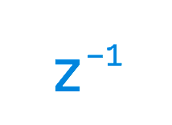

WARNING: This node is currently in beta. CPU usage will be considerably higher when it is present.
The UnitDelay node is a single-sample delay. Like the FeedbackDelay node, the UnitDelay can be used to determine where a delay occurs in a feedback loop.
A UnitDelay is required whenever you need to express feedback with a single sample. For example, implementing the following recurrance requires using a UnitDelay:
y[n] = a * x[n] + b * y[n-1]
The y[n-1] term is the output delayed by one sample, fed back into the input.
Many types of digital filters (those that incorporate feedback) require using a UnitDelay.
The presence of a UnitDelay node in the patch causes Audulus to switch into single-sample processing mode. This requires considerably more CPU.